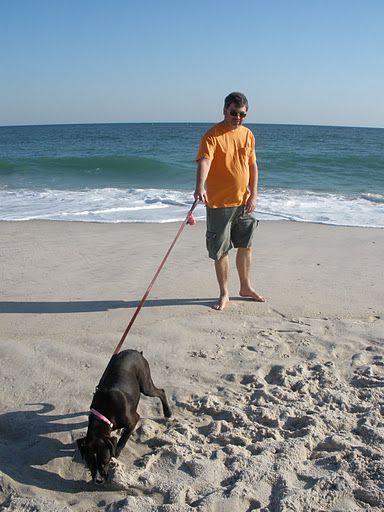

{kind=link}
About Me
I am an Associate Professor in the Department of Physics and Astronomy at the State University of New York (SUNY) Stony Brook, working in the Astronomy Group.
Before coming to Stony Brook, I was a postgraduate researcher in the Astronomy and Astrophysics department at UC Santa Cruz, working with the Supernovae Science Center. I was formerly a research associate (and graduate student before that) at the Center on Astrophysical Thermonuclear Flashes at the University of Chicago, where I was a co-developer of the FLASH Code. I did my undergraduate at the University of Rochester.
My main research interests involve computational astrophysics (particularly the development of new hydrodynamics methods for low Mach number astrophysical flows) and nuclear astrophysics (in particular, studying anything that blows up). This work is done in collaboration with the Center for Computational Sciences and Engineering at LBL.
My main simulation tools are low Mach number hydrodynamics Maestro, and its compressible counterpart, Castro. Maestro solves a low Mach number system of hydrodynamics equations that filters soundwaves, enabling it to efficiently model convection and reactions in stratified flows. Maestro is more general than the traditional anelastic method, as it can evolve finite-amplitude density and temperature perturbations to a hydrostatic background and can also evolve this background state in response to the local heating. Its sister code, Castro models the fully compressible Euler equations with self-gravity, reactions, and multigrid flux-limited diffusion for radiation. Both of these codes use the BoxLib library to manage the adaptive mesh grid hierarchy and parallelization.
I apply these codes to studying problems in nuclear astrophysics, such as various models for Type Ia supernovae and X-ray bursts.
Examples of SNe Ia applications at small scales in white dwarfs include studies of the Landau-Darrieus instability, reactive Rayleigh-Taylor instabilities, and buoyant reacting bubbles. On the full star scale, we've modeled the convection preceding the explosion of a Chandrasekhar mass white dwarf and have now turned our attention to convection in sub-Chandra models. This work is ongoing.
Earlier work in XRBs involved using fully compressible hydrodynamics methods to study spreading of perturbations and somewhat related helium detonations. Currently, I am working with Chris Malone to model convection in mixed H/He X-ray bursts.
I'm also using Castro to model merging white dwarfs (this is together with Alan Calder and Doug Swesty).
I have a number of code examples online (also on my github page), including a hydrodynamics teaching code, pyro. To go along with pyro, I have written a set of notes on Computational Hydrodynamics for Astrophysics. To make these notes freely available, and encourage contributions from the community, I started a project called the Open Astrophysics Bookshelf.
Further back, I was one of the original developers of the FLASH Code. This code has seen wide adoption for astrophysical problems involving compressible flows.
My XRB/supernovae and low Mach number hydrodynamics research is supported primarily by a grant from the the Dept. of Energy, Office of Nuclear Physics. The white dwarf merger studies are supported by the NSF.